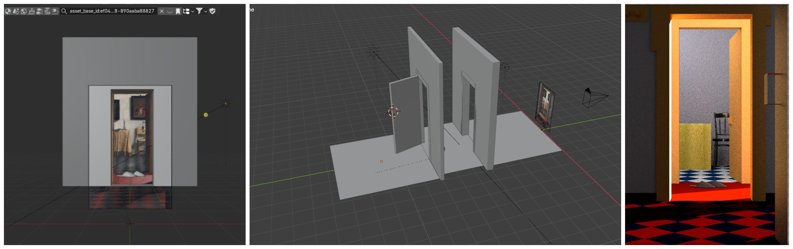
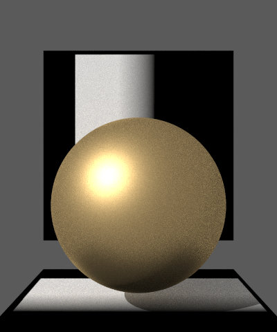
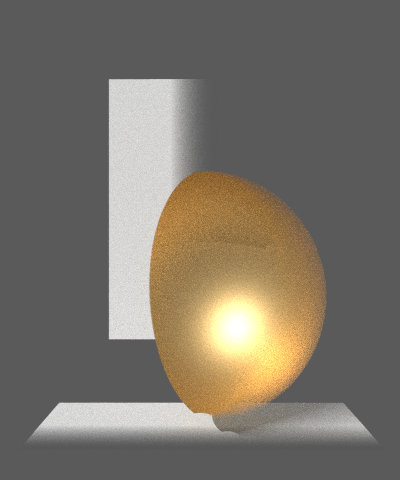
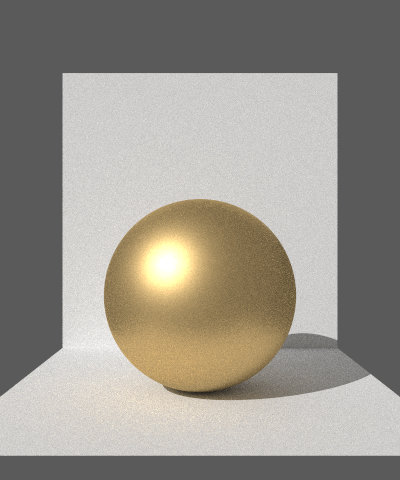
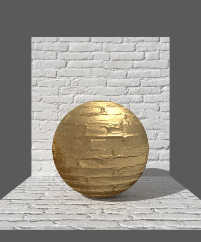
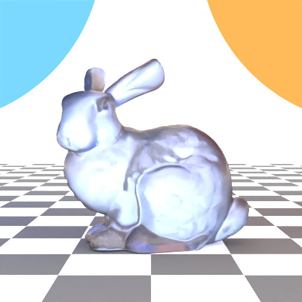
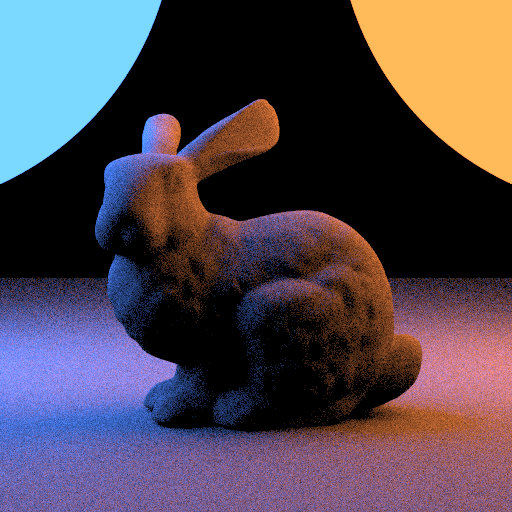

Slippers
Mustafa Oğuz Türk
Render Time: 6min 26s
Resolution: 1966 x 2925
Scene created in Blender, rendered using Lightwave Renderer.
Modelling:
As a concept, I planned to capture a balance between the simplicity of Alftan and the detailed depth
of Hoogstraten.
To start, I added the primary lighting with a direct source to create depth.
Using the Hoogstraten painting as a reference, I constructed the walls and positioned the slippers
to act as the scene's anchor, as seen in the first image below.
Next, I implemented the checkerboard floor. Although Lightwave supports procedural
checkerboards, the exporter limitation required me to handle this via Blender's shading editor as a
texture workaround. A view of the scene during this step can be seen in the second picture.
After modeling the door frames, I added a chair asset. I box-modeled the table and utilized
Blender's Cloth Simulation to drape the tablecloth naturally. I also used physics simulation to
create the hanging towel near the door.
To add final details, I integrated a book stack asset and created the a painting on the wall by
mapping a texture to a plane and I created the grid look on the middle floor using brick texture.
Variations & Challenges:
Lightwave Exporter was not fully compatible and I had to change some sections in the .xml file
manually every time I wanted to render the scene, causing the process to be time consuming.
I also experimented with different lighting setups, moving from a darker setup shown below to the
softer,
more ambient look.

Alpha masking is a feature that randomly dismisses
intersections based on the alpha channel of the texture.
To implement this feature I had to add m_alpha as a member of instance class in instance.hpp and I
had to apply some
changes to intersect and transmission function in instance.cpp. I changed the intersect function to
check for mean alpha and then decide randomly to skip the intersection if m_alpha was given. A
similar change was needed for transmittance function to control shadowing.
Realizing transmittance function had an effect on the m_alpha test results and then figuring out
how to change it was my biggest challenge. Intersect implementation was straightforward in
comparison.


Normal mapping is a feature to increase surface detail without increasing polygon count. To implement
this feature I had to add m_normal as a member of instance class in instance.hpp and I
had to apply some changes to transformFrame function in instance.cpp. I added a block that checks
and remaps the normals if m_normal is given.
I did not have a hard time implementing this feature, it was well explained in the project features
file.


This feature allows for simulating complex materials like frosted glass. I based my implementation on the paper linked in the project features file, while also checking for similarities between this bsdf and rough conductor bsdf and dielectric bsdf, that I implemented earlier. I have written a new roughdielectric.cpp file, including evaluate and sample funcctions. It started by checking the vector directions to understand if it was a reflection or refraction. Then, the result is calculated using the half vector and other variables. Sampling was trickier, I sampled using the fresnel and weighing the probabilities just like in dielectric bsdf. I had to try different conventions for vector and weight calculation since there were inconsistenties between the feautre description and the paper description. In the end I sticked with the paper formulas.

Denoising reduces the noise, resulting in a smooth image. For this feature, I had to add an albedo
variable to my aov integrator. For this integrator to work I had to add a getAlbedo function to
every bsdf implementatiion. Then I implemented the feature as a postprocess in denoise.cpp using the
OIDN guidelines.
Coding part was not complicated, however, linking the library in Windows and using it without errors
was a really big, time consuming challenge. After trying different methods and visiting tutorial
hours, a solution was found.

The following third-party assets and artistic references were used in the creation of this scene: